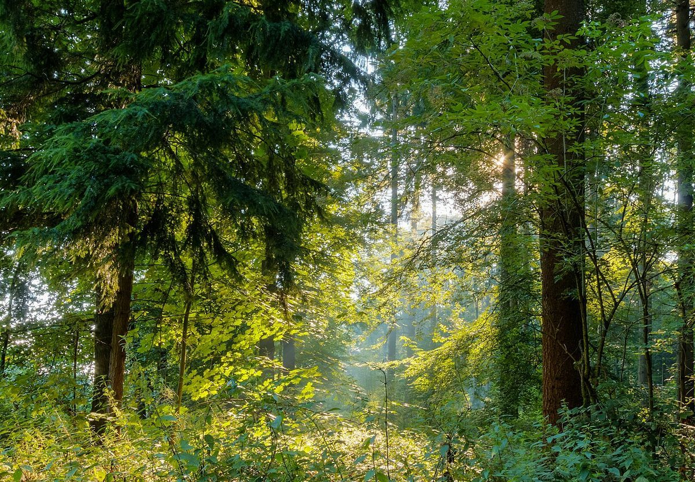

メニュー
ご案内の準備を進めています。
準備中
メニュー・料金は準備中です。詳しくはお電話またはInstagramでお問い合わせください。
 イメージ写真
イメージ写真 イメージ写真
イメージ写真掲載写真はフリー素材のイメージで、店舗の実際の写真ではありません(他地域で撮影されたもの、撮影地が不明なものを含みます)
ご来店前に
内容や料金は変更になる場合があります。ご来店前に、お電話またはInstagramで店舗へご確認ください。

ご案内の準備を進めています。
メニュー・料金は準備中です。詳しくはお電話またはInstagramでお問い合わせください。
イメージ写真イメージ写真掲載写真はフリー素材のイメージで、店舗の実際の写真ではありません(他地域で撮影されたもの、撮影地が不明なものを含みます)
内容や料金は変更になる場合があります。ご来店前に、お電話またはInstagramで店舗へご確認ください。
